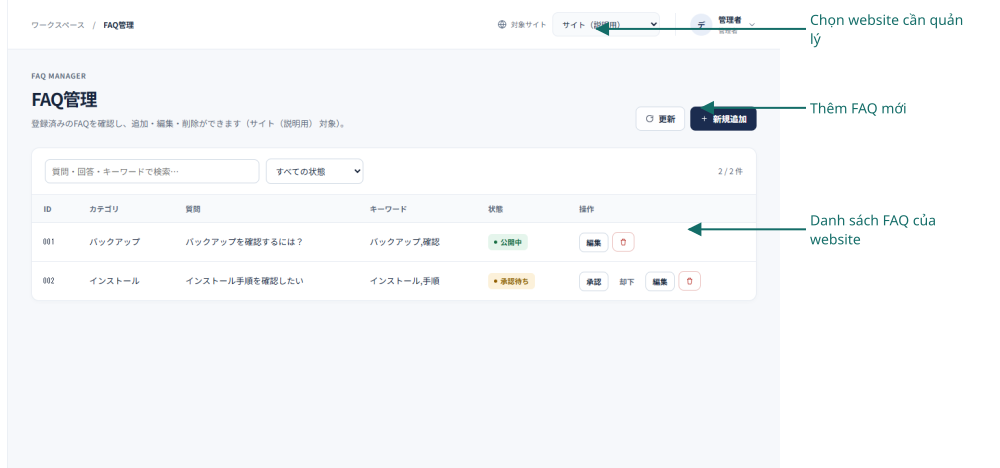

Chọn website đang làm việc
- Tìm ô chọn website trên thanh đầu trang.
- Chọn website cần quản lý. Nhân viên chỉ thấy website được cấp quyền.
- Kiểm tra tên website đang chọn trước mỗi lần thêm, nhập hoặc xóa nội dung.
Kết quả cần thấy
Danh sách FAQ, tài liệu và cửa sổ thử chat được chuyển sang website đã chọn.
Chọn chức năng trong menu
| Tên trên giao diện | Dùng để làm gì |
|---|---|
| FAQ管理 | Tạo, sửa, duyệt, xóa câu hỏi và đáp án có sẵn. |
| FAQ一括取込 | Nhập nhiều câu hỏi và đáp án từ Excel. |
| AIナレッジ | Tải tài liệu lên và kiểm tra nội dung đọc được. |
| ウィジェット確認 | Thử chat và lấy đoạn mã đặt chat vào website. |
| サイト管理 | Sửa thông tin, cách trả lời và giao diện chat; dành cho quản trị viên. |
| ユーザー管理 | Tạo tài khoản và cấp quyền website; dành cho quản trị viên. |
Nếu không thấy website hoặc menu
Thông báo 割り当てられたサイトがありません nghĩa là tài khoản chưa được cấp website. Hãy nhờ quản trị viên kiểm tra quyền. Trên màn hình hẹp, bấm nút menu để mở danh sách chức năng.